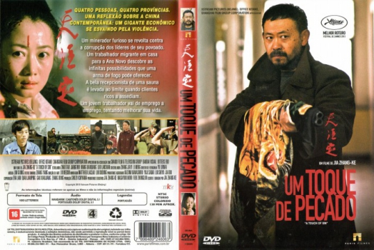

Um Toque de Pecado (2013)



Avaliação (IMDb):


7.1/10 (12.4K votos)
Avaliação (Usuário):
Outro Título:天注定
País:Japan, 131 minutos
Idiomas falados:Mandarin, Português
Gênero(s):Drama, Crime, Ação
Diretor(s):Jia Zhangke
Codec:MPEG-2 (DVD)
Número: 5388
Sinopse:
O Longa relata quatro histórias, entre elas uma sobre uma trabalhadora sexual em um bordel de luxo, que refletem uma sociedade em plena mutação, na qual o capitalismo desenfreado gera uma grande desigualdade e uma colossal falta de humanidade.
Elenco:
Jiang Wu, Baoqiang Wang, Zhao Tao
Tipo de mídia: DVD R/RW,
Legendas: Português, Sem Legendas
Alugado: Não
Tela: Anamorphic Widescreen